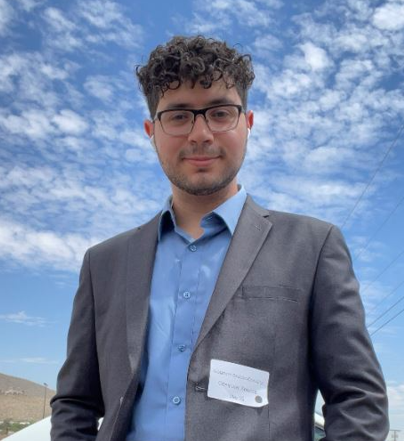

this webpage is currently under construction I am currently learning html css and javascript this is all a work in progress <3
Hello, im Alejandro Sedeno-Gonzalez
Computer Science graduate from The University of Texas at El Paso
Aspiring software engineer passionate about building useful software and solving meaningful problems.
About Me
Ever since I was a kid I always had an emphatuation with computers I used to take appart anything electronic just for the fun of it, later on in highschool I took my first computer science class and instantly fell in love. The satisfaciton of seeing something I built come to life drove me to persure and obtain a degree in Computer Science. During my undergraduate studies I developed my skills primarily in Pyhton and Java though right now I am currently diversifying and learning the web development stack(html css javascript). I live for challenges wether thats on programming playing vidoe games or playing basketball i've never been one to shy away when a task becomes difficult.
Education
The University of Texas At El Paso: Dec 2025
Bachelors of Science in Computer Science: GPA 3.34/4.0
Relavent coursework: Data Structures, Advanced Object Oriented Programming, Computer Architecture, and Software Engineering I & II
Skills
Projects
Miners Bank
A Java-based command-line banking system meant to demonstrate object oriented programming principles
Check it out here